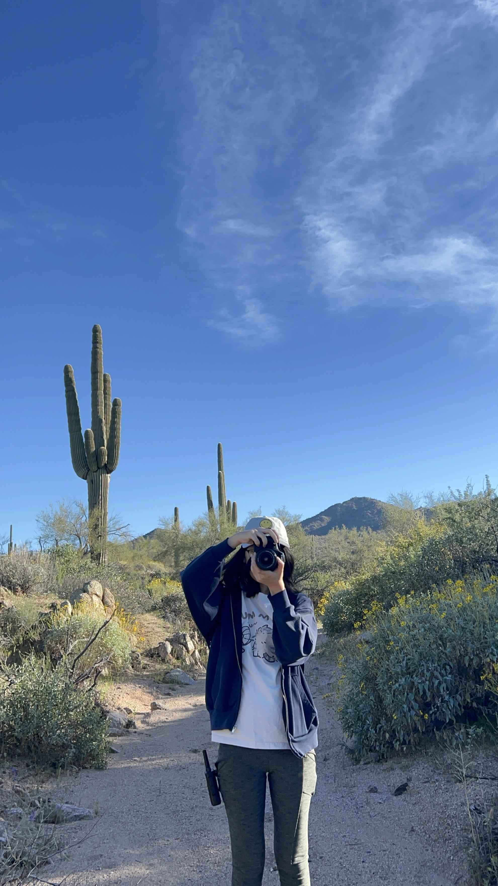

Hiking Gear & Tips
Hiking in Arizona can be rewarding, but desert conditions require preparation. This guide covers the basic gear, safety essentials, and planning tips that can help make your hike safer and more enjoyable.

Must Bring
- Water
- Good hiking shoes
- Sunscreen
- Snacks
- Phone
Recommended for Desert Hikes
- Hat
- Sunglasses
- Electrolytes
- Lightweight backpack
- Long sleeves for sun protection
Emergency & Safety Items
- Mini first aid kit
- Portable charger
- Flashlight or headlamp
- Map or trail app
- Extra water
What to Wear
- Breathable clothing
- Good socks
- Trail shoes or hiking shoes
- Hat for shade
- Layers for early mornings
Desert Hiking Safety
Hydration
Bring more water than you think you need. Desert heat can cause dehydration quickly, even on shorter trails.
Weather
Check the forecast before leaving. Hot temperatures, strong sun, and sudden weather changes can make a hike much harder.
Route Planning
Know your trail distance, difficulty, and turnaround point. Always tell someone where you are going before you leave.
Stay Safe
Start early, stay on marked trails, and watch for desert hazards such as loose rock, cactus, and wildlife.
Quick Hike Checklist
- Water packed
- Sunscreen applied
- Weather checked
- Phone charged
- Trail selected
- Someone knows your route
New to Hiking?
Start with shorter and easier trails before attempting longer or steeper hikes. Give yourself time to build confidence, learn your pace, and get used to desert conditions. Not sure where to start? Check out the Trails page for beginner-friendly hikes.